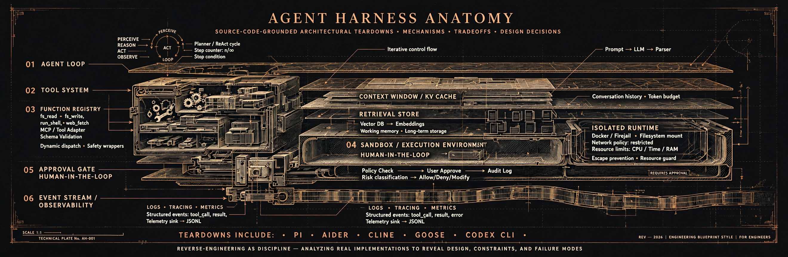

Agent Harness Anatomy
Rigorous, source-grounded architecture teardowns of AI agent harnesses. Every behavioral claim pinned to verifiable source code.
#1 — pi: the minimalist terminal harness
Two packages, one clean seam: a model-agnostic agent loop library plus a terminal coding application. Mechanism in the core, policy in extensions — no iteration cap, no built-in approvals, structured prompts diffed per turn.
#2 — aider: the pair programmer that parses prose
One LLM call per turn, then a deterministic parse→apply→verify pipeline over text edit formats — no tool calls at all. Model-aware where pi is model-agnostic: a 313-entry compatibility table, a PageRank repo map, and git as the undo system.
#3 — Cline: the approval-gated IDE resident
A host-independent agent loop behind a 224-RPC proto-bus bridge: the VS Code
webview talks to an SDK runtime it never shares memory with. Every tool call
passes a three-layer approval model with diff previews; every turn is
stash-checkpointed for /undo.
#4 — Goose: the MCP-native agent that asks a judge
Every tool is an MCP server — builtins included — behind a three-layer
approval model with an LLM judge for SmartApprove. Mid-migration between a
legacy loop {} and an effect-sourced state machine; recipes turn
prompts into runnable, schedulable programs.
#5 — Codex CLI: the sandbox-first agent that speaks one wire protocol
TUI, exec, and daemon are all clients of a single JSON-RPC app-server — one protocol, one loop. Three nested turn loops with no max_turns anywhere in the tree; tool calls descend a four-layer sandbox stack (bwrap + landlock + seccomp on Linux) and an approval chain where hooks outrank the user.
#6 — OpenHands: the event-sourced agent SDK
Everything is a typed event in a persistent tree — the LLM never sees the raw stream, only a cached incremental view with enforced invariants. Hooks intercept the event stream, a critic can veto termination, and per-completion LLM routing lets the agent swap its own model mid-run. Microagents are dead; AgentSkills-spec skills killed them.
#7 — OpenCode: the dual-runtime coding agent
Runs its session loop on two runtimes with Effect-TS dependency injection — and rebuilds the tool surface per request, so the model only ever sees the tools this turn needs. Permissions are deferred to the moment of use, and compiler feedback arrives inside the tool call via LSP, not as a separate repair loop.
#8 — Hermes Agent: the self-improving agent
The agent writes its own skills at runtime — a background review loop distills what worked into new capabilities, and a curator promotes them, on two different timescales. The harness learns from every session without a human in the loop editing prompts.
#9 — OpenClaw: the channel-first gateway
Telegram, WhatsApp, and Discord are first-class ingress — every
inbound message traverses a seven-stage admission pipeline
(runChannelTurn: ingest → classify → preflight →
resolve → assemble → dispatch → finalize) before the agent
loop ever sees it. A SQLite-backed ingress queue with dead letters keeps
turns durable, and Tool Search materializes tool definitions on demand
so most tools never enter the model context.
#10 — Gemini CLI: the routed, policy-gated terminal agent
Google's terminal coding agent re-routes the model every turn through a composite strategy chain, executes tools via a scheduler with explicit lifecycle states, and gates each call through a TOML policy engine with tiered priorities plus an eleven-hook interception system. No tool search — all 26 built-ins ride every request — and memory is JSONL plus markdown, mined nightly by a background extraction service.
#11 — SWE-agent: the research original
A benchmark harness that grew an agent: the model never sees a raw shell, only a designed agent-computer interface defined as data (YAML schemas plus container-side scripts). Per-step trajectory rewrites, a replay model, attempt-level reviewer retry loops — research instrumentation, not product — around a deliberately boring synchronous loop.
#12 — Qwen Code: the fork that outgrew its parent
Alibaba's fork of Gemini CLI, independent since v0.1 — and the fork
point predates the policy engine and router, so Qwen rebuilt both from
scratch: a rule-string permission manager with a default AUTO mode driven
by a fail-closed LLM classifier, a 13-preset multi-protocol provider
registry with deep Qwen-family wire logic, 22 hook types, Agent Teams,
and a qwen serve ACP daemon fronting channels, desktop,
mobile, and three SDKs.
Found a mistake?
These teardowns live or die on their grounding: every behavioral claim is pinned to a release tag and commit SHA, with a line-level permalink to the source. Pins drift, code gets misread, and claims go stale — if you spot an error or have a better reading of the source, corrections are welcome as pull requests. A correction with a permalink beats a correction with an opinion.